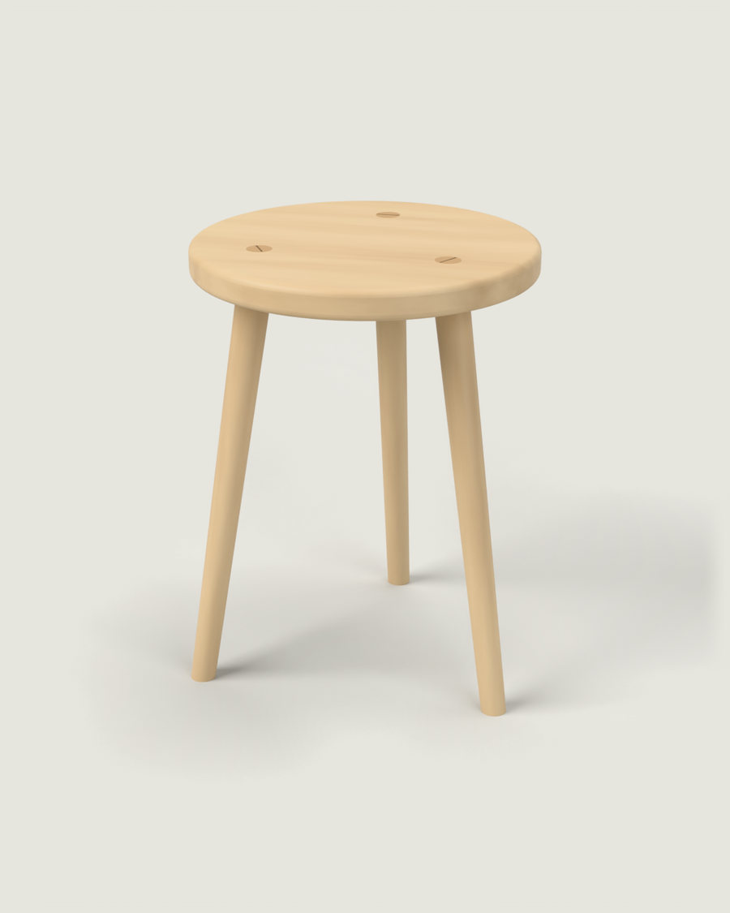

Tuotteet / Pökkö



Pökkö
Jakkara. Okerkoski, 2021.
Pökkö on kolmijalkainen koivujakkara. Okerkoski tekee sen samasta koivusta kuin tehtaan pöytien kehykset, ja jalat sorvataan Hollolassa.
- Valmistaja
- Puusepäntehdas Okerkoski Oy, Hollola
- Vuosi
- 2021
- Tila
- Tuotannossa
- Mitat
- Ø 340 mm, korkeus 450 mm
- Istuin
- 30 mm, liimattu kolmesta koivulamellista
- Jalat
- Ø 32 mm, kapenevat 24 mm:iin, kulma 9°
- Liitos
- Läpitappi ja tammikiila
- Pinta
- Öljyvaha
- Värit
- Luonnonkoivu, okra, musta
- Paino
- 2,6 kg
- Testattu
- EN 12520 ja EN 1022, 2021
- Prototyypit
- 7
- Valmistettu
- Noin 4 000 kpl, 2021–2026
- Varaosat
- Irtojalka 24 €, Okerkoski
Ohjehinta 189 € (2026). Myynti Okerkoski ja sen jälleenmyyjät.
Kysymykset ja testausseloste: Tuomas Rinne, 048 573 2251, tuomas@kivela-rinne.example
Kolme jalkaa
Okerkoski halusi vuonna 2020 tuotteen, jonka voi tehdä tehtaan nykyisillä koneilla ja pöytätuotannosta jäävästä koivusta. Istuin on 30 mm paksu ja liimattu kolmesta lamellista. Jalat on kiilattu istuimen läpi, joten liimasauma ei kanna painoa yksin.
Kolmijalkainen jakkara ei keiku epätasaisella lattialla, mikä on vanhoissa taloissa hyödyllistä. Kiilojen päät näkyvät istuimen päällä kolmena tummana pisteenä.
Ensimmäisessä prototyypissä jalkojen kulma oli 6 astetta. Jakkara kaatui, kun Tuomas nousi sen päälle vaihtamaan lamppua. Nyt kulma on 9 astetta, ja samaan kulmaan piirsimme myöhemmin logomme R-kirjaimen jalan.

Prototyypit 1–7
Pökön seitsemän prototyyppiä tehtiin verstaalla tammikuussa 2021. Ensimmäiset jalat sorvattiin verstaan vuoden 1964 sorvilla, nykyiset Okerkoskella.
- P1
6°. Kaatui lampun vaihdossa.
- P2
8°, istuin 26 mm.
- P3
9°, kolme lamellia.
- P4
Jalat Ø 36 mm. Liian raskas.
- P5
Ø 32 mm, kapeneva.
- P6
Tammikiilat.
- P7
Okerkosken öljyvaha. Testiin.
Vaiheet
- Syyskuu 2020
- Tehdaskäynti Okerkoskella
- Tammikuu 2021
- Prototyypit 1–7
- Maaliskuu 2021
- Testaus EN 12520 ja EN 1022
- Toukokuu 2021
- Myyntiin
- Kesäkuu 2022
- Värit okra ja musta
- Tammikuu 2026
- Uusi jalkasabluuna
Aineistot
- TuotekorttiPDF · 1 s. · 0,3 Mt
- Testausseloste EN 12520 ja EN 1022PDF · 6 s. · 0,9 Mt
- Hoito-ohjePDF · 1 s. · 0,2 Mt
- 3D-malliSTEP · 1,9 Mt
- Kuvat painoonJPG · 6 kuvaa · 31 Mt
Hoito
Pyyhi kostealla liinalla. Lisää öljyvahaa kerran vuodessa tai kun pinta näyttää kuivalta. Jos jalka löystyy, lyö kiila puunuijalla syvemmälle. Älä liimaa, koska liima estää myöhemmän kiristämisen.